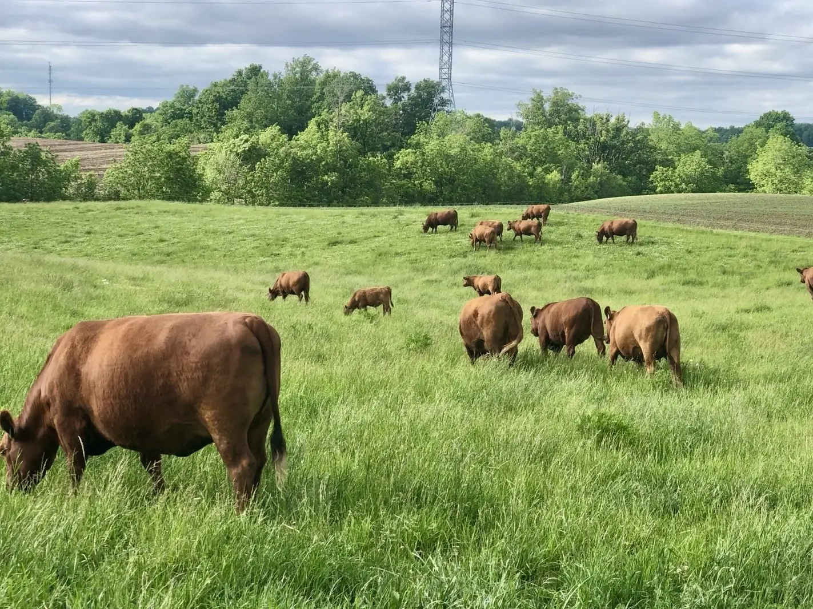

Why Rotational Grazing Matters
Rotational grazing is more than moving cattle between fields. It is a practical way to give grazed plants recovery time, manage forage deliberately, and respond to changing pasture conditions.
Read the article